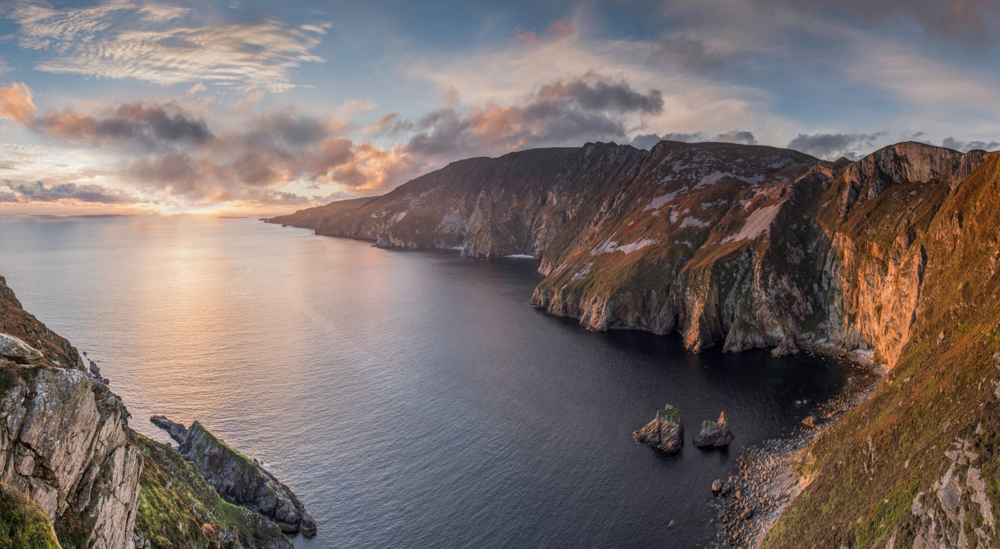
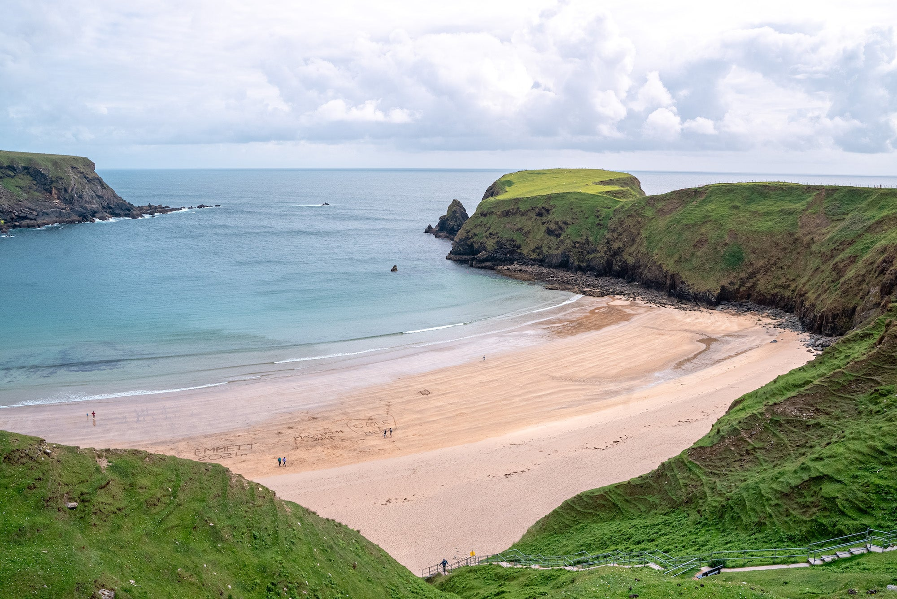

Why Donegal?
 Donegal is regarded as one of the most beautiful counties in Ireland and it's sea side scenery is second to none. From the cliffs of Sliabh Liag, to the high peaks of Errigal, there is much beauty to find in these lands. The Wild Atlantic Way also runs up the western coast of Donegal, from Bundoran all the way to the Derry border. Be sure to visit Donegal Town if you visit, it's regarded as the culture capital of the county. Famous for it's craft shops, great food venues and friendly people.
What's on offer?
Some local: